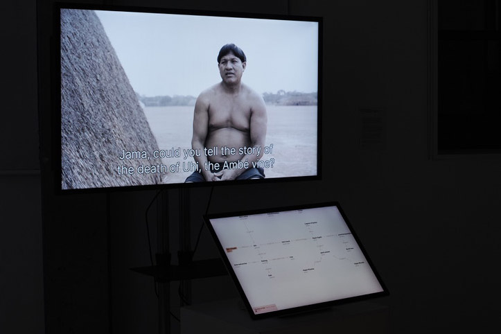
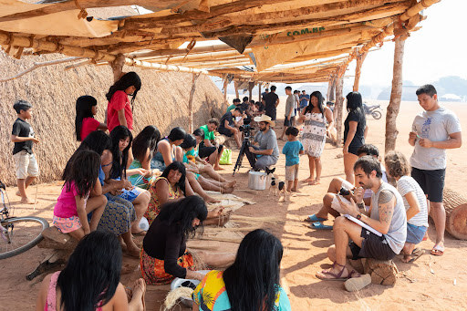
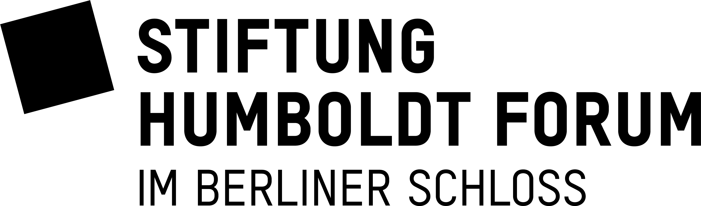
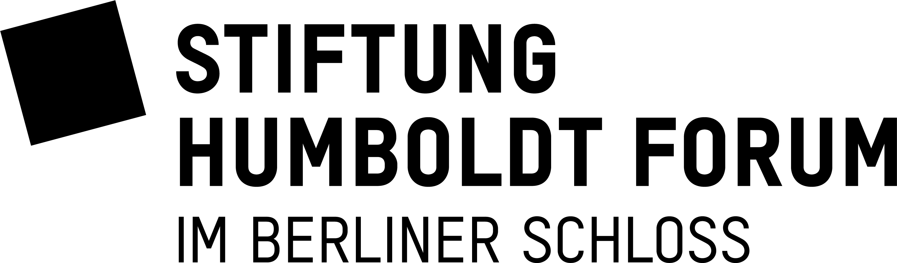

Amazonia Future Lab
The indigenous communities of the Upper Xingu south of the Amazon river recognise objects, places, plants, myths, rites, and spiritual owners as intertwined entities that form entangled lifeworlds. However western museal practices centre on artefacts and divide them along disciplinary boundaries into separate institutions such as ethnological museums, botanical collections, and libraries. The Amazonia Future Lab develops new formats and tools to recontextualise Xingu artefacts into narratives that surface their complex interrelationships while adequately representing indigenous perspectives.
Wanderer
In the framework's production mode, data can be visualised in a network of relations by adding, connecting and arranging entities on a canvas. In a second step, these flowcharts can be animated in coordination with videos, by zooming and panning and by highlighting or blurring to focus on selected elements. A flexible exhibition setup combining linear video and interactive visualisation allows to exhibit the data and invite visitors to explore the possibilities of user-guided navigation along data relations and video clips. With its emphasis on illustrating entangled structures, the framework is suitable for future use cases in the fields of cultural collections, science communication and beyond. The Wanderer is freely available as open source software on GitHub.
Xingu Entangled
Xingu Entangled is the first case study of the Amazonia Future Lab project and was implemented with the Wanderer. The interactive video exhibit documents material practices and knowledge from the indigenous communities of the Upper Xingu.
Xingu Entangled underscores the rich interconnectedness of objects, places, events, organisms, and spiritual actors and weaves them into non-linear narratives and data structures. By emphasising boundary objects over physical artefacts, it bridges disciplinary domains and effectively communicates manifold perspectives. The interactive capacity of the two-channel installation allows visitors to freely explore the graphs and videos, while also offering situated storytelling with voices and perspectives from the Xingu community.
Approach
Background
“Amazonia Future Lab” aims at addressing these weak spots and working on solutions that can both accommodate the views of indigenous cultures, and do justice to the complex connections entailed in their knowledge systems.
The lessons learned, along with a broad network of institutional and local partners, represent a unique opportunity to build up the collaborative processes that are fundamental to this research—for instance, through the long cooperation history of the Museu Nacional with indigenous researchers in Brazil. By moving away from strictly disciplinary, museum-centered views of biocultural artifacts, we create better conditions to develop tools that can promote a holistic approach to museum collections. Our goal is hence to extend and intensify the work initiated with “Sharing Knowledge”, as well as to tackle central challenges of multiperspectivity and decolonization of knowledge production.
Activities
 ©Fidel Thomet
©Fidel Thomet
Exhibition | 27.05 – 29.05.2024 | Berlin
Xingu Entangled at re:publica 24
We showed our two-screen installation at the re:publica 24, which, under the motto "Who cares?", explored the challenges of the future that require a society characterised by solidarity and civic engagement. With our installation, we illustrated the potential of collaboration between science, design practice and indigenous knowledge. And asked: How can we overcome artefact-centric museum practices and disciplinary boundaries to adequately represent indigenous perspectives?  ©Fidel Thomet
©Fidel Thomet
Exhibition | 27.03 – 23.06.2024 | Rio de Janeiro
Xingu Entangled at Existência Numérica
Results from the research project Amazonia Future Lab are being shown internationally as part of the exhibition Existência Numérica in Rio de Janeiro. Indigenous perspectives on the interdependencies between humans and the environment are made visible in the form of the video installation Xingu Entangled, which combines documentary film footage with interactive visualisations. In its second edition, “Existência Numérica” is being hosted by the cultural center “Futuros - Arte e Tecnologia”, in Rio de Janeiro. Curated by Barbara Castro, Doris Kosminsky and Luiz Ludwig, the exhibition dwells upon the complexity of data visualization and its applications in the world of visual arts.
©Fidel Thomet
Exhibition | 22.11 – 24.11.2023 | Edinburgh
Xingu Entangled at Information+ Conference 2023
Information+ is an interdisciplinary conference that brings together researchers, educators, and practitioners in information design and data visualization to discuss common questions and challenges in these rapidly changing fields. In the exhibition, we used our framework’s presentation features to display contextualized data in combination with videos. The result was a two-channel installation where visitors could navigate different knowledge networks, along with documentary films on myths from the Xingu region.
 ©Andrea Scholz
©Andrea Scholz
Workshop | November 2023 | Macucu (Vaupés/ Colombia)
Workshop on indigenous circular calendar
During the project workshop in Macucu, so-called indigenous environmental agents, who work together with the Brazilian non-governmental organisation ISA (Instituto Socioambiental), were guests in Colombia. The focus was on an exchange about the astronomical cycle of the year and observations of the constellations, natural phenomena, rituals, and associated myths. The circular calendar representations common in the region and especially in the Brazilian context were adapted for the community in Colombia. During the workshop week, the participants experimented with various artistic techniques of representation and attempts at abstraction.
 ©Carlos Fausto
©Carlos Fausto
Workshop | July 2023 | Ipatse (Xingu park, Mato Grosso/ Brazil)
2nd Workshop on transgenerational transfer of knowledge
The activities of the first workshop were continued in the second project workshop in Ipatse. A particular emphasis was placed on the Buriti palm, the various artefacts made from its components and the myths associated with it. While the women of the community continued to work with different types of tuahi under the supervision of three ologi, several men made the gimi head rings. As the end of the workshop coincided with the start of the kuarup ritual to commemorate the deceased, the new gimi were used straight away.
©Carlos Fausto
Workshop | 24.08 – 02.09.2022 | Ipatse (Xingu park, Mato Grosso/ Brazil)
Workshop on transgenerational transfer of knowledge
The first project workshop in Ipatse focussed on the transgenerational transfer of practical knowledge and material skills. The community appointed so-called ologi, older people with special skills, to show others how to make certain artefacts. The activities were organised according to gender: While the women concentrated on tuahi, mats made from fibres of the Buriti palm, the men worked on fish traps made from the Ambé liana. The activities were affected by severe forest fires in the region.
 ©Fidel Thomet
©Fidel Thomet
Workshop | 10.06.2022 | Berlin
Amazonia Future Lab at re:publica 2022
This workshop investigated postcolonial approaches to collections, databases, practices, and knowledge rooted in the Amazon. We asked participants to explore the evolving Amazonia Future Lab knowledge graph and to contribute their perspectives. Moreover, we encouraged them to frame questions - which later served to guide us in shaping interfaces for navigating, experiencing, and contesting rich information spaces.
Paper
Infrastructure as digital tools and knowledge practices: connecting the Ethnologisches Museum Berlin with amazonian indigenous communities
Andrea Scholz Thiago da Costa Oliveira, Marian Dörk — Digitalisierung ethnologischer Sammlungen: Perspektiven aus Theorie und Praxis, 2021
Partners

The Ethnologisches Museum (Ethnological Museum) evolved from the collections of the royal cabinets of art and since its foundation in 1873 has become one of the largest and most significant collections of its kind worldwide. The museum's holdings comprise approximately 500,000 ethnographic, archaeological and historical-cultural objects from Africa, Asia, America and Oceania. They are complemented by some 500,000 media (ethnological photographs, films, audio recordings) and about 200,000 pages of written documents. Many of its collections are among the most extensive and valuable in existence.
Dr. Andrea Scholz, Curator for transcultural cooperation
Dr. Thiago da Costa Oliveira, Research Fellow
Flavia Heins, Research Associate
Ute Marxreiter, Research Associate

The UCLAB at Fachhochschule Potsdam is an interdisciplinary visualization research group situated between design, computing, and the humanities. Our work revolves around information visualization with a particular focus on the challenges and questions arising from social, cultural, and technological transformations. Our mission is to make sense of comprehensive datasets and complex issues by developing creative and critical approaches to visualization. All our research is collaborative in nature. The lab itself is a collaboration between the Department of Design and the Institute for Urban Futures. At the junction of design teaching and visualization research, we strive to have an impact in both academia and the world of practice.
Prof. Dr. Marian Dörk, Research Professor
Fidel Thomet, Research Associate
Nadia Zeissig, Research Associate
Giacomo Nanni, Research Associate

The Botanic Garden and Botanical Museum Berlin (BGBM) is a so-called Zentraleinrichtung (central unit) of Freie Universität Berlin. Today with 20,000 different species of plants on 43 hectares the Botanic Garden has become one of the largest and most diverse botanical gardens in the world.
Prof. Dr. Thomas Borsch, Director
Anton Güntsch, Director, Center for Biodiversity Informatics and Collection Data Integration (ZBS)

The Ibero-Amerikanisches Institut (IAI, Ibero-American Institute) is an interdisciplinary center for academic and cultural exchange between Germany and Latin America, the Caribbean, Spain and Portugal. It is home to the largest specialist library in Europe for the Ibero-American region. It is also a place of knowledge production, exchange and cultural translation. Combining an information center, a research center and a cultural center, the IAI is both a platform for cooperation and a catalyst for intercultural and transcultural dialog.
Prof. Dr. Barbara Göbel, Director
Ralf Ullrich, Research Associate
Christoph Müller, Research Associate

The Institut für Museumsforschung (Institute for Museum Research) is the research and documentation centre at the Staatliche Museen zu Berlin. It carries out multidisciplinary research on all aspects of museums and their collections and offers services to museums across Germany. The scope of the institute’s work includes visitor research, digitalisation, long-term archiving, museum management, documentation, new media and education.
Dr. Patricia Rahemipour, Director

The Museu Nacional (National Museum) is Brazil’s oldest scientific institution. Internationally recognized as a center of excellence in research, the Museu Nacional develops numerous projects in various lines of research, and maintains partnerships with the main national and international centers for anthropology and natural sciences. In the area of education, the museum offers specializations, extension and post-graduation courses in several fields of knowledge, in addition to hosting temporary and permanent exhibitions and educational activities open to the general public.
Prof. Dr. Carlos Fausto, Research Professor
Prof. Dr. Maria Franco Trindade Medeiros, Research Professor
Funding
This project is funded by the Digital Culture Programme of the German Federal Cultural Foundation and the foundation Stiftung Humboldt Forum im Berliner Schloss.
 
